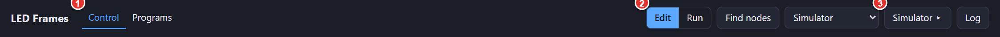
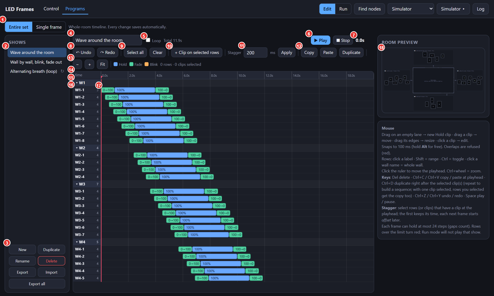
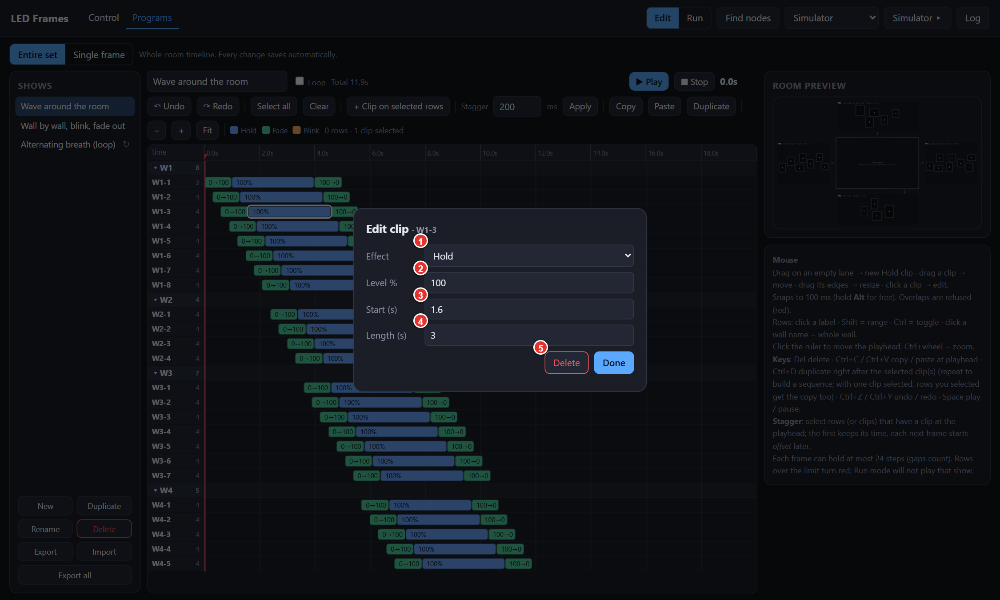
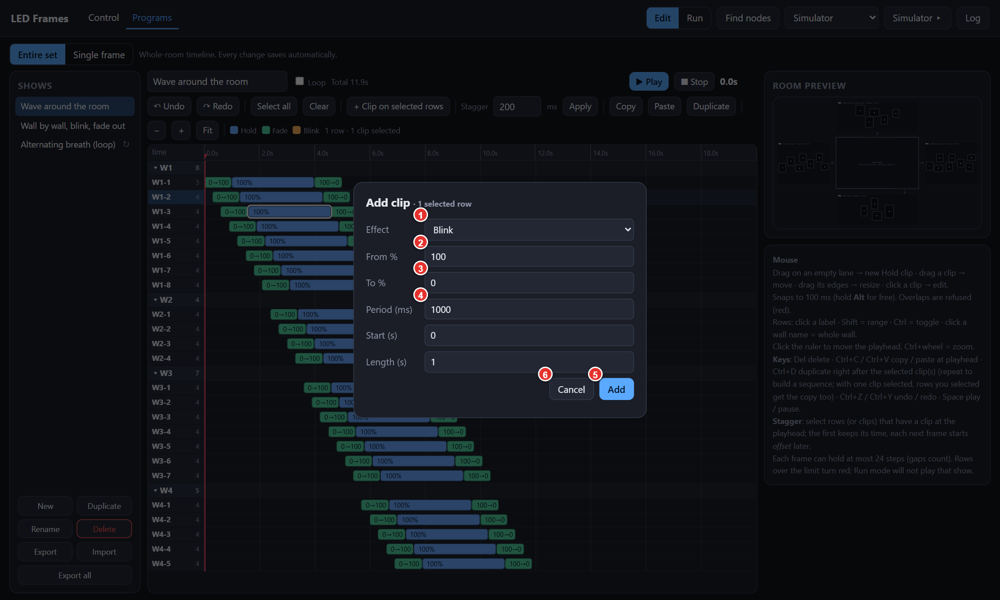
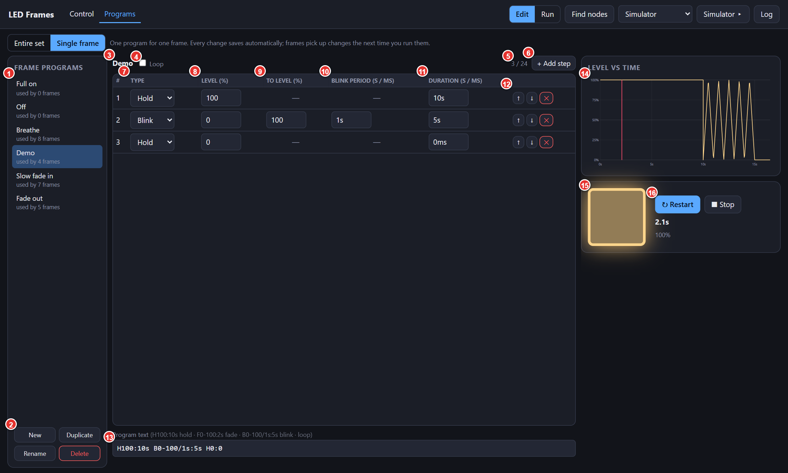
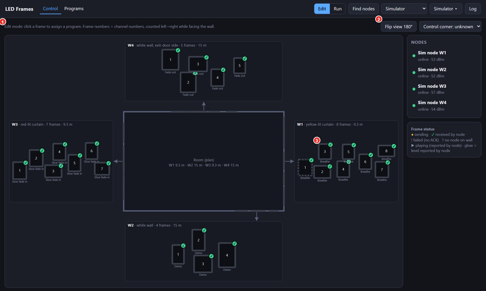
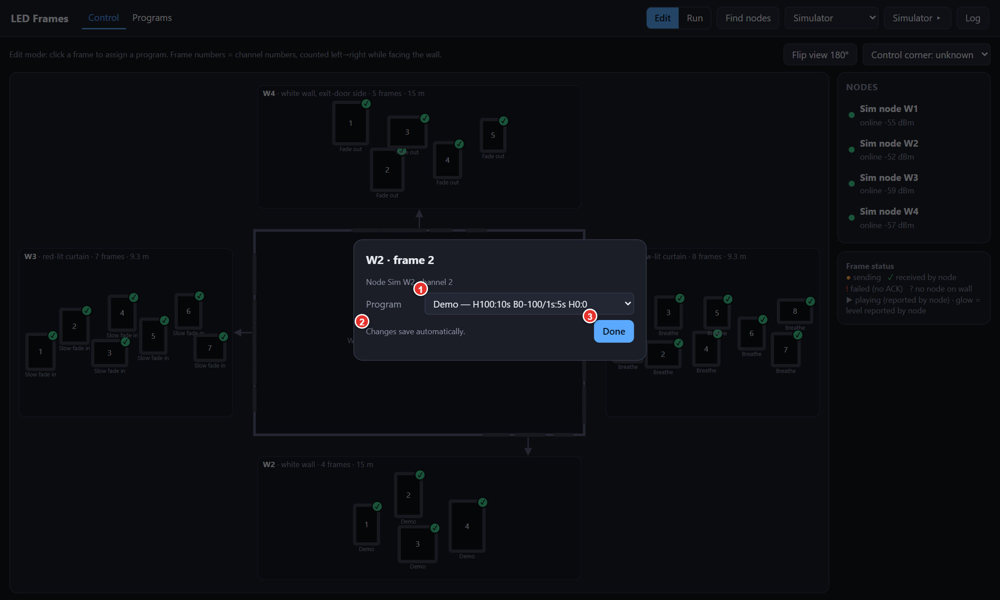
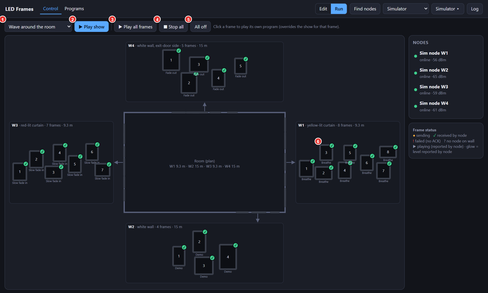
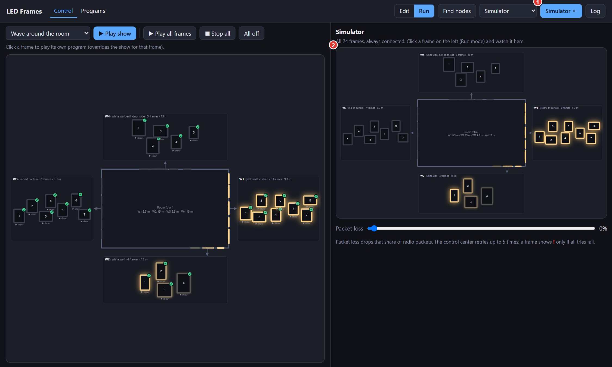

LED 画框灯光控制软件
操作手册
建议优先阅读：
① 第 1 章 界面总览（含基本概念）
② 第 2 章 Programs 页 · 整套节目（Entire set）
③ 第 3 章 Programs 页 · 单框程序（Single frame）
第 4 章（Control 页）和第 5 章（快捷键与备份）可作为参考，需要时查阅。
软件文件：web/control.html（使用 Chrome 或 Edge 打开）
界面按钮名称保持英文原样；图中红色编号对应图下同编号的说明。
第 1 章 界面总览
1.1 基本概念
| 名称 | 说明 |
|---|
| 画框 (frame) | 每个画框内有一条灯带，对应一路灯光，共 24 路。 |
| 墙 (W1–W4) | 房间四面墙：W1 有 8 个画框，W2 有 4 个，W3 有 7 个，W4 有 5 个。画框编号为面向墙面从左到右依次编号，例如 W1-3 = W1 墙左数第 3 个。 |
| 三种效果 |
Hold：亮度保持不变。
Fade：亮度由 A 渐变到 B。
Blink：亮度在 A、B 之间来回渐变（三角波），需设置周期。
亮度范围 0–100%。每一个效果称为一“步 (step)”，每个画框最多 24 步。 |
| Loop | 勾选后循环播放；未勾选则只播放一遍，并停在最后一步的亮度。 |
单框程序
Single frame | 只控制一个画框的效果（最多 24 步），可分配给任意多个画框。 |
整套节目
Entire set (show) | 控制全部 24 个画框的时间线，每个画框一行，各画框可在不同时间做不同的事。 |
两种作品相互独立：节目在 Entire set 中编辑，单框程序在 Single frame 中编辑。
1.2 顶部栏

图 1-1 顶部栏（所有页面共有）
- Control / Programs 页面标签。Control：分配程序并播放；Programs：制作程序和节目。
- Edit / Run 模式开关。Edit：点画框用来分配程序，不会点亮灯。Run：点画框会播放该画框的程序。
- Simulator ▸ 打开 / 关闭屏幕右侧的模拟器（虚拟房间，实时显示灯光效果）。点击后会自动切换到 Run 模式。
顶部栏及 Control 页右侧的 Find nodes、连接下拉框、Log、Nodes 面板、画框上的 ✓ 标记，以及模拟器中的 Packet loss 滑块，都属于设备通信功能，本手册不涉及，可忽略。
1.3 数据保存
所有修改自动保存在当前电脑的浏览器中。请始终使用同一个浏览器（Chrome 或 Edge），不要使用无痕窗口，也不要清除浏览器数据，否则已做的内容会丢失。建议定期在整套节目页点 Export all 导出备份（见 2.3）。
第 2 章 Programs 页 · 整套节目（Entire set）
点 Programs，再点 Entire set。这是一条类似剪辑软件的时间线：一行 = 一个画框，横向 = 时间，彩色条 = 片段 (clip)。每次修改自动保存。没有片段的空白时间，灯为熄灭状态。

图 2-1 整套节目编辑页（示例：Wave around the room，依次亮起再熄灭）
- Entire set / Single frame 切换整套节目与单框程序（软件会记住上次的选择）。
- Shows 节目列表。名称后的 ↻ 表示该节目为循环节目。
- 节目管理按钮，见 2.3。
- 节目名称，可直接修改。
- Loop 节目循环；勾选后出现循环长度 length ... ms（见 2.6）。
- ▶ Play / ■ Stop 在编辑页预览（右侧小房间同步发光）。播放中变为 ⏸ Pause。
- 当前播放时间（红色竖线位置）。
- ↶ Undo / ↷ Redo 撤销 / 重做（最多 100 步）。
- Select all / Clear 选中全部行 / 取消选择。
- + Clip on selected rows 在选中的各行上添加片段（见 2.4）。
- Stagger 流水（追逐）效果，填写间隔毫秒数后点 Apply（见 2.5）。
- Copy / Paste / Duplicate 复制 / 粘贴 / 紧接原片段之后复制一份（见 2.2）。
- − + Fit 时间线缩小 / 放大 / 适应窗口。也可按住 Ctrl 滚动滚轮缩放。
- 时间尺。单击或拖动可移动红色播放线（playhead）。
- 墙名。点击选中整面墙的所有画框；点 ▾ 折叠 / 展开该墙。
- 画框行名。点击选中该行。右侧小数字为该画框已用步数（上限 24，见 2.7）。
- 片段。蓝 = Hold，绿 = Fade，橙 = Blink。片段上的文字：“0→100”表示由 0 渐变到 100，“100%”表示保持 100%。
- Room preview 房间预览，播放时各画框按播放线位置实时发光。
2.1 鼠标操作
| 操作 | 方法 |
|---|
| 新建片段 | 在某一行的空白处按住鼠标拖动，生成一个 Hold 片段。 |
| 移动片段 | 左右拖动（只改变时间，不能换行；多选时一起移动）。 |
| 调整长度 | 拖动片段的左边缘或右边缘。 |
| 选中片段 | 单击。Shift 或 Ctrl + 单击可多选。 |
| 编辑片段参数 | 先单击选中，再单击一次，弹出窗口（见 2.4）。 |
| 选中行 | 单击行名；Shift + 单击选连续范围；Ctrl + 单击逐个加选；单击墙名选整面墙。 |
| 移动播放线 | 单击时间尺，或在空白处单击。 |
| 缩放时间线 | Ctrl + 鼠标滚轮。 |
| 精确定位 | 拖动时默认吸附到 100 ms 的整数倍；按住 Alt 可精确到 1 ms。 |
片段不能重叠。拖动到重叠位置时片段变红，松开后提示 “That would overlap another clip, so it was not applied”，操作不生效。
2.2 复制、粘贴与 Duplicate
| 按钮 | 作用 |
|---|
| Copy | 复制选中的片段。 |
| Paste | 粘贴到播放线位置；粘贴前请先点时间尺移动播放线。 |
| Duplicate | 紧接选中片段之后复制一份，可连续使用以依次排列。如果只选中了一个片段、同时选中了若干行，这些行也会各得到一份。 |
2.3 节目管理按钮（图 2-1 的 3）
| 按钮 | 作用 |
|---|
| New / Duplicate / Rename / Delete | 新建 / 复制 / 重命名 / 删除（删除前会确认；至少保留一个节目）。 |
| Export | 将当前节目保存为一个文件（.json）。 |
| Import | 从文件导入一个或多个节目，添加到列表中，不覆盖现有节目。 |
| Export all | 将所有节目保存为一个文件，建议定期备份。 |
2.4 片段窗口
修改已有片段：单击选中后再单击一次。每项修改即时保存，窗口内显示 ✓ Saved；数值无效时以红字提示原因（如重叠、超出长度），且不会生效。

图 2-2 Edit clip
- Effect Hold / Fade / Blink。
- Level %（Fade、Blink 时为 From %） 亮度 0–100。
- Start (s) 开始时间（秒）。
- Length (s) 持续时间（秒），可填小数。
- Delete 删除该片段（Done 关闭窗口）。
在多行上同时添加片段：先选中若干行，再点 + Clip on selected rows。

图 2-3 Add clip（以 Blink 为例）
- Effect 效果类型。
- From % 起始亮度。
- To % 目标亮度（Hold 无此项）。
- Period (ms) 闪烁周期，单位毫秒（仅 Blink）。
- Add 添加到所有选中的行。
- Cancel 取消。
2.5 流水效果（Stagger）
- 在需要参与流水的各行上建立相同的片段（可先选中这些行，用 + Clip on selected rows 一次添加）。
- 点时间尺，把播放线移到这些片段上（各行在播放线位置都必须有片段）。
- 选中这些行。
- 在 Stagger 后填入相邻画框的间隔（ms），点 Apply。
结果：选中的第一行保持不动，之后每一行依次比前一行晚一个间隔开始。图 2-1 的示例即为间隔 300 ms 的波浪。如提示 “Select 2+ rows that have a clip at the playhead”，请检查所选行数以及播放线位置。
2.6 循环节目
勾选 Loop 后出现 length ... ms，即循环一圈的总长度（如 8000 = 8 秒）。时间线上不能在该长度之外放置片段，且长度不能小于最后一个片段的结束时间。节目总长度显示在旁边的 Total。未循环的节目时间线最长 10 分钟，播放结束后各画框停在最后的亮度。
2.7 步数限制
每个画框最多 24 步。一个片段算一步，片段之间的空隙（熄灯）也算一步。
- 行名右侧的小数字为已用步数。
- 超过 24 步时该行变红，顶部显示 ⚠ N frames over 24 steps。
- 超限的节目在 Run 模式下不能播放，会提示 “can't play: W1-3 needs 26 steps (max 24)”。请删减或合并片段后再播放。
第 3 章 Programs 页 · 单框程序（Single frame）
点 Programs，再点 Single frame。这里制作只用于一个画框的程序，数量不限，每个程序最多 24 步，每次修改自动保存。修改后的程序会在下次于 Run 模式播放该画框时生效。

图 3-1 单框程序页（预览 Demo：亮 10 s → 闪 5 s → 熄灭）
- 程序列表。点击选中；名称下的 “used by N frames” 表示被 N 个画框使用。
- New（新建，默认 H100:1s）/ Duplicate / Rename / Delete。删除正在使用的程序时会提示，并使相关画框变为无程序。
- 当前程序名称。
- Loop 循环播放。
- 步数计数，如 3 / 24。
- + Add step 在末尾添加一步（满 24 步后不可用）。
- Type Hold / Fade / Blink。
- Level (%) 亮度；Fade、Blink 时为起始亮度。
- To level (%) 目标亮度（Fade、Blink）。
- Blink period 闪烁周期：从 A 到 B 再回到 A 的时间（仅 Blink）。
- Duration 该步持续时间。
- 每行右侧按钮：↑ 上移、↓ 下移、✕ 删除该步。
- Program text 程序文本，与表格同步（见 3.2）。
- Level vs time 亮度–时间曲线。勾选 Loop 时显示两个周期，虚线为循环点；红线为预览播放位置。
- 预览方块，亮度越高越亮。
- ▶ Play / ■ Stop 预览播放 / 停止（播放中 Play 变为 ↻ Restart），并显示时间与亮度。未循环的程序播完后停在最后的亮度。离开本页预览自动停止。
3.1 时间的输入格式
Duration 与 Blink period 可输入：500ms、1.5s、10s；只输入数字时单位为毫秒。输入无效时输入框变红，并提示 Not a valid value。
最后一步的 Duration 填 0，表示执行该步后保持其亮度（例如 Hold、0%、0 = 最终保持熄灭）。
3.2 程序文本
表格下方的文本框与表格双向同步，也可直接编辑或复制粘贴。步骤之间用空格分隔。
| 写法 | 含义 |
|---|
H100:10s | Hold：100%，持续 10 秒 |
F0-100:2s | Fade：2 秒内由 0 渐变到 100 |
B0-100/1s:5s | Blink：0 与 100 之间来回，周期 1 秒，持续 5 秒 |
loop | 写在最前面，表示循环 |
示例：loop F0-100:2s F100-0:2s（2 秒变亮、2 秒变暗，循环）；H100:10s B0-100/1s:5s H0:0（亮 10 秒、闪 5 秒、熄灭）。
文本有误时，文本框下方以红字提示，表格保持不变；离开文本框时若仍有误，会恢复为最近一次正确的内容。
3.3 制作示例：亮 10 秒 → 闪 5 秒 → 熄灭
- 点 New，再点 Rename 命名。
- 第 1 步：Type = Hold，Level = 100，Duration = 10s。
- 点 + Add step。第 2 步：Type = Blink，Level = 0，To level = 100，Blink period = 1s，Duration = 5s。
- 再点 + Add step。第 3 步：Hold，Level = 0，Duration = 0。
- 点 ▶ Play 预览，并对照曲线图检查。
第 4 章 Control 页 · 分配与播放
4.1 Edit 模式：给画框分配程序

图 4-1 Control 页（Edit 模式）。方块为画框，下方小字为已分配的程序名
- 提示栏：点击画框分配程序；画框编号从左到右。
- Flip view 180° 将房间图旋转 180°，仅改变显示方向。
- 画框。点击后弹出分配窗口（图 4-2）。

图 4-2 点击画框弹出的窗口
- Program 选择该画框使用的程序（只列出单框程序）。— none — 表示不分配。选择后立即保存。
- 状态文字，显示 “Saved”。
- Done 关闭窗口。
4.2 Run 模式：播放

图 4-3 Control 页（Run 模式）
- 节目下拉框，选择要播放的整套节目（只列出节目）。节目前带 ⚠ 表示超过步数限制，需先修改（见 2.7）。
- ▶ Play show 播放所选节目，所有画框同时开始。
- ▶ Play all frames 每个画框播放它自己被分配的程序；未分配程序的画框不动。
- ■ Stop all 全部停止，保持当前亮度。
- All off 全部在 1 秒内渐灭至 0。
- 点击单个画框：播放该画框自己的程序，且该画框此后不再属于正在播放的节目。未分配程序时提示 “No program assigned”。
4.3 模拟器

图 4-4 模拟器打开、节目播放中
- Simulator ▸ 再次点击关闭模拟器。
- 虚拟房间，直接读取灯光输出，亮度比左侧主画面更准确。
Control 页主画面显示的亮度来自约每 0.5 秒一次的状态更新，所以快于 1 秒一次的闪烁在主画面上可能显得偏慢或不准，请以模拟器为准。
第 5 章 快捷键与备份
5.1 整套节目页快捷键
仅在整套节目页有效（输入文字或有弹窗时除外）。苹果电脑以 Cmd 代替 Ctrl。
| 按键 | 作用 |
|---|
| Space | 预览播放 / 暂停 |
| Delete / Backspace | 删除选中的片段 |
| Ctrl + C / Ctrl + V | 复制 / 粘贴（粘贴到播放线位置） |
| Ctrl + D | 紧接选中片段之后复制（可连续按） |
| Ctrl + Z | 撤销 |
| Ctrl + Y / Ctrl + Shift + Z | 重做 |
| Ctrl + A | 选中全部行 |
| Esc | 取消选择 |
| Ctrl + 滚轮 | 缩放时间线 |
| Alt + 拖动 | 不吸附，精确到 1 ms |
单框程序页没有快捷键，也没有撤销功能；修改较大的程序前，建议先用 Duplicate 保留一份副本。
5.2 备份与迁移
- 整套节目：用 Export（单个）或 Export all（全部）导出为文件，在另一台电脑上用 Import 导入。
- 单框程序及画框分配保存在浏览器中，没有导出功能；换电脑或换浏览器后需重新制作。
- 如果浏览器禁止保存，启动时会提示 “This viewer blocks saving…”，此时请改用 Chrome 或 Edge 打开。